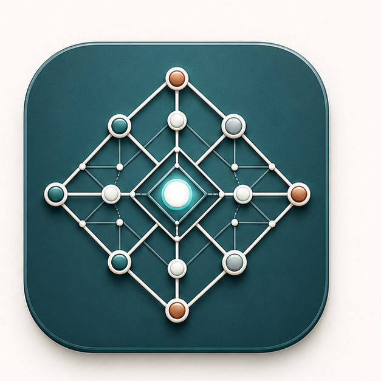
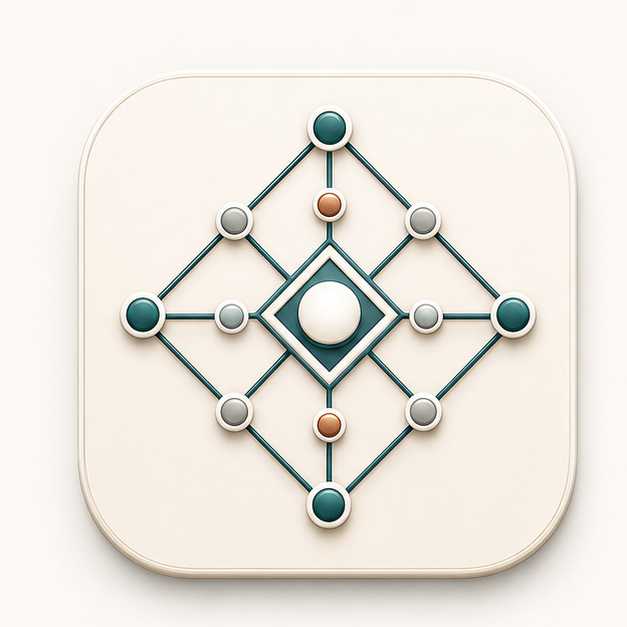
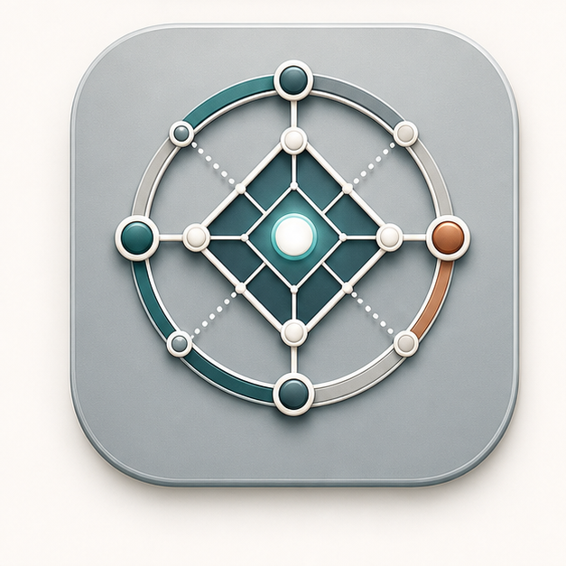
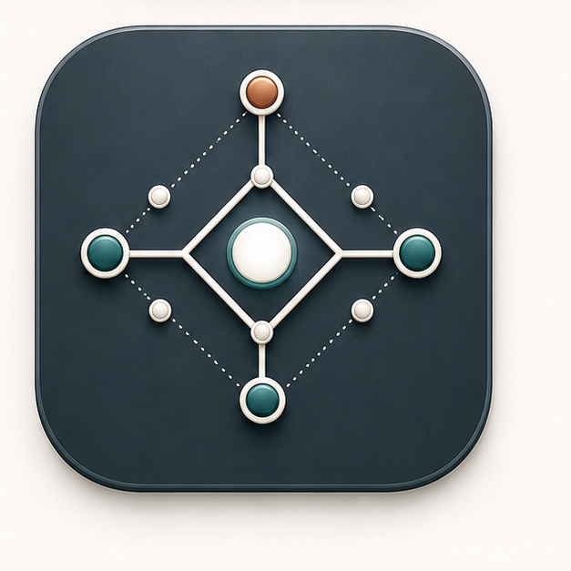

Plan Conversion Handoffs
This mock keeps the lifecycle app chrome intact and only swaps the small program icon. The goal is a mark that feels like institutional knowledge, handoffs, and relationship mapping without becoming a generic tech logo.
Lattice direction only. The selected preview uses the top-right refinement in the same topbar position where the program mark would live.

This mock keeps the lifecycle app chrome intact and only swaps the small program icon. The goal is a mark that feels like institutional knowledge, handoffs, and relationship mapping without becoming a generic tech logo.

Most editorial and calm.
Closest to the top-right pick.

Best bridge to the banner.

Cleanest at small sizes.